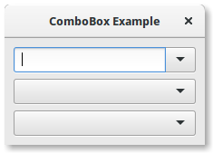

13. ComboBox¶
A Gtk.ComboBox permite a seleção de um item em um menu suspenso. Eles são preferíveis a ter muitos botões de rádio na tela, pois ocupam menos espaço. Se apropriado, ele pode mostrar informações extras sobre cada item, como texto, uma imagem, uma caixa de seleção ou uma barra de progresso.
Gtk.ComboBox é muito similar a Gtk.TreeView, já que ambos usam o padrão model-view; A lista de opções válidas é especificada na forma de um modelo de árvore, e a exibição das opções pode ser adaptada aos dados no modelo usando renderizadores de célula. Se a caixa de combinação contiver um grande número de itens, talvez seja melhor exibi-los em uma grade em vez de em uma lista. Isso pode ser feito chamando Gtk.ComboBox.set_wrap_width().
O widget Gtk.ComboBox geralmente restringe o usuário às opções disponíveis, mas ele pode opcionalmente ter um Gtk.Entry, permitindo que o usuário insira texto arbitrário se nenhuma das opções disponíveis for adequada. Para fazer isso, use um dos métodos estáticos Gtk.ComboBox.new_with_entry() ou Gtk.ComboBox.new_with_model_and_entry() para criar uma instância Gtk.ComboBox.
Para uma lista simples de escolhas textuais, a API de visão de modelo de Gtk.ComboBox pode ser um pouco avassaladora. Neste caso, Gtk.ComboBoxText oferece uma alternativa simples. Ambos Gtk.ComboBox e Gtk.ComboBoxText podem conter uma entrada.
13.1. Exemplo¶
1 2 3 4 5 6 7 8 9 10 11 12 13 14 15 16 17 18 19 20 21 22 23 24 25 26 27 28 29 30 31 32 33 34 35 36 37 38 39 40 41 42 43 44 45 46 47 48 49 50 51 52 53 54 55 56 57 58 59 60 61 62 63 64 65 66 67 68 69 70 71 72 73 74 75 76 77 78 | import gi
gi.require_version('Gtk', '3.0')
from gi.repository import Gtk
class ComboBoxWindow(Gtk.Window):
def __init__(self):
Gtk.Window.__init__(self, title="ComboBox Example")
self.set_border_width(10)
name_store = Gtk.ListStore(int, str)
name_store.append([1, "Billy Bob"])
name_store.append([11, "Billy Bob Junior"])
name_store.append([12, "Sue Bob"])
name_store.append([2, "Joey Jojo"])
name_store.append([3, "Rob McRoberts"])
name_store.append([31, "Xavier McRoberts"])
vbox = Gtk.Box(orientation=Gtk.Orientation.VERTICAL, spacing=6)
name_combo = Gtk.ComboBox.new_with_model_and_entry(name_store)
name_combo.connect("changed", self.on_name_combo_changed)
name_combo.set_entry_text_column(1)
vbox.pack_start(name_combo, False, False, 0)
country_store = Gtk.ListStore(str)
countries = ["Austria", "Brazil", "Belgium", "France", "Germany",
"Switzerland", "United Kingdom", "United States of America",
"Uruguay"]
for country in countries:
country_store.append([country])
country_combo = Gtk.ComboBox.new_with_model(country_store)
country_combo.connect("changed", self.on_country_combo_changed)
renderer_text = Gtk.CellRendererText()
country_combo.pack_start(renderer_text, True)
country_combo.add_attribute(renderer_text, "text", 0)
vbox.pack_start(country_combo, False, False, True)
currencies = ["Euro", "US Dollars", "British Pound", "Japanese Yen",
"Russian Ruble", "Mexican peso", "Swiss franc"]
currency_combo = Gtk.ComboBoxText()
currency_combo.set_entry_text_column(0)
currency_combo.connect("changed", self.on_currency_combo_changed)
for currency in currencies:
currency_combo.append_text(currency)
vbox.pack_start(currency_combo, False, False, 0)
self.add(vbox)
def on_name_combo_changed(self, combo):
tree_iter = combo.get_active_iter()
if tree_iter is not None:
model = combo.get_model()
row_id, name = model[tree_iter][:2]
print("Selected: ID=%d, name=%s" % (row_id, name))
else:
entry = combo.get_child()
print("Entered: %s" % entry.get_text())
def on_country_combo_changed(self, combo):
tree_iter = combo.get_active_iter()
if tree_iter is not None:
model = combo.get_model()
country = model[tree_iter][0]
print("Selected: country=%s" % country)
def on_currency_combo_changed(self, combo):
text = combo.get_active_text()
if text is not None:
print("Selected: currency=%s" % text)
win = ComboBoxWindow()
win.connect("destroy", Gtk.main_quit)
win.show_all()
Gtk.main()
|